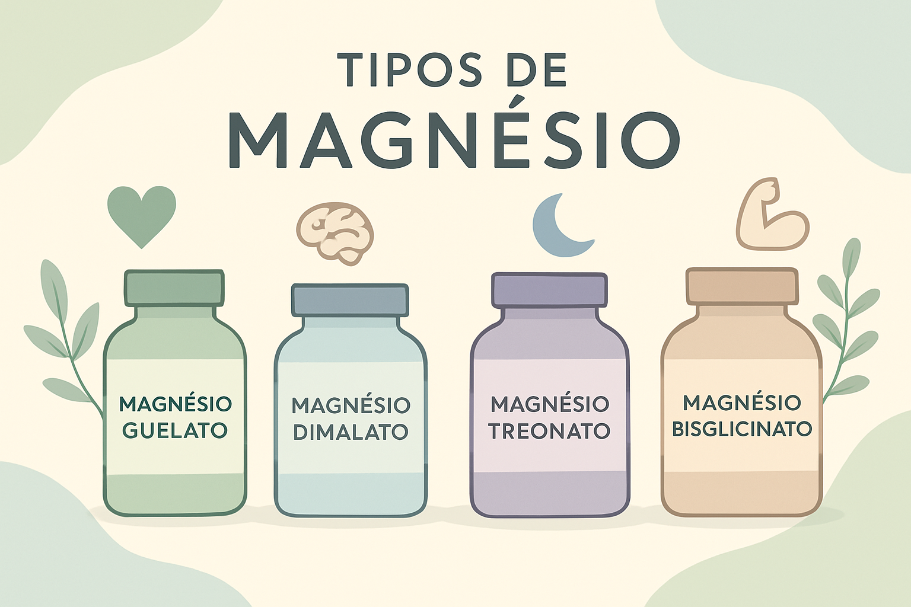

Guia completo para escolher o tipo ideal de magnésio conforme seus objetivos de saúde
O magnésio é um dos minerais mais importantes para o funcionamento adequado do nosso organismo, participando de mais de 300 reações enzimáticas essenciais. Desde a regulação da função nervosa até o fortalecimento dos ossos, este mineral desempenha papéis fundamentais em praticamente todos os sistemas do corpo humano.
No entanto, quando se trata de suplementação, a variedade de tipos disponíveis pode gerar confusão. Magnésio quelato, dimalato, treonato e bisglicinato são apenas algumas das formas mais populares, cada uma com características específicas que as tornam mais adequadas para diferentes objetivos de saúde.
A escolha do tipo correto de magnésio pode fazer toda a diferença na eficácia do suplemento e nos resultados obtidos. Enquanto alguns tipos são mais indicados para melhorar o sono e reduzir a ansiedade, outros se destacam no aumento da energia ou na melhoria da função cognitiva.
| Produto | Onde Comprar | Tipo de Magnésio | Benefícios Principais | Formas Disponíveis | Dose Recomendada |
|---|---|---|---|---|---|
| Magnésio Quelato |
Amazon Mercado Livre |
Quelato | Saúde muscular, geral | Cápsula | 200–400mg |
| Magnésio Dimalato |
Amazon Mercado Livre |
Dimalato | Energia, fadiga, disposição | Cápsula, Pó | 200–400mg |
| Magnésio Treonato |
Amazon Mercado Livre |
Treonato | Memória, foco, cognição | Cápsula, Pó | 1.000–2.000mg |
| Magnésio Bisglicinato |
Amazon Mercado Livre |
Bisglicinato | Sono, relaxamento, ansiedade | Cápsula, Pó | 200–400mg |
O magnésio quelato, também conhecido como magnésio quelado, é uma forma de suplemento onde o mineral magnésio está ligado a aminoácidos ou ácidos orgânicos. Esta ligação química, chamada de quelação, protege o magnésio durante a digestão e facilita sua absorção pelo intestino, tornando-o mais biodisponível para o organismo.
Existem diferentes subtipos de magnésio quelato, incluindo o magnésio glicinato (ligado à glicina), magnésio lisinato (ligado à lisina) e magnésio aspartato (ligado ao ácido aspártico). Cada subtipo oferece benefícios ligeiramente diferentes, mas todos compartilham a característica de melhor absorção em comparação ao magnésio isolado.
O magnésio quelato é considerado uma opção versátil, oferecendo benefícios amplos para a saúde geral. Sua principal vantagem está na prevenção de cãibras musculares, pois promove o relaxamento muscular adequado após a contração. Este efeito é especialmente benéfico para atletas e pessoas que sofrem com espasmos musculares frequentes.
Para a saúde cardiovascular, o magnésio quelato atua favorecendo o relaxamento dos vasos sanguíneos, o que contribui para a redução da pressão arterial. Além disso, alguns subtipos como o bisglicinato possuem propriedades antioxidantes que ajudam a combater os radicais livres e reduzir o risco de doenças cardíacas.
Na área da saúde mental, este suplemento pode auxiliar no tratamento da ansiedade e do estresse. O magnésio atua na produção de serotonina, um neurotransmissor essencial para o bem-estar e regulação do humor. Também ajuda a regular os níveis de cortisol, conhecido como hormônio do estresse.
Outros benefícios incluem a prevenção de pedras nos rins formadas por oxalato de cálcio, manutenção da saúde óssea através da regulação da vitamina D, controle dos níveis de açúcar no sangue e melhoria da qualidade do sono devido às suas propriedades relaxantes.
A dosagem típica do magnésio quelato varia entre 200mg e 400mg por dia, geralmente dividida em 1 a 2 cápsulas. A dose específica deve ser determinada por um profissional de saúde, considerando as necessidades individuais, objetivos de tratamento e possíveis deficiências existentes.
O magnésio quelato está disponível principalmente na forma de cápsulas, com concentrações que variam entre 200mg, 300mg e 500mg por unidade. Esta apresentação facilita a dosagem precisa e a incorporação na rotina diária.
O magnésio quelato pode ser combinado com outros nutrientes para potencializar seus efeitos. A associação com vitamina D é particularmente benéfica para a saúde óssea, enquanto a combinação com vitamina B6 pode amplificar os benefícios para o sistema nervoso e redução do estresse.
Embora seja geralmente bem tolerado, o magnésio quelato pode causar efeitos colaterais como náuseas, diarreia e desconforto estomacal, especialmente quando tomado em jejum. Por isso, recomenda-se o consumo junto às refeições. Pessoas com insuficiência renal, úlceras gastrointestinais ou diarreia crônica devem evitar o uso. Grávidas, lactantes e crianças só devem usar sob orientação médica.
O magnésio dimalato é uma forma específica de magnésio quelato onde o mineral está ligado a duas moléculas de ácido málico. Esta combinação única oferece benefícios tanto do magnésio quanto do ácido málico, criando um suplemento especialmente eficaz para questões relacionadas à energia e fadiga.
O ácido málico é um composto orgânico naturalmente presente em frutas como maçãs e peras, conhecido por seu papel no ciclo de Krebs, o processo celular responsável pela produção de energia. Quando combinado com o magnésio, cria uma sinergia que potencializa os efeitos energéticos do suplemento.
O principal diferencial do magnésio dimalato está na sua capacidade de aumentar os níveis de energia e melhorar o desempenho físico. Esta característica o torna especialmente indicado para pessoas que sofrem com fadiga crônica, cansaço excessivo ou baixa disposição para atividades diárias.
Para atletas e praticantes de exercícios físicos, o magnésio dimalato oferece benefícios significativos na contração e relaxamento muscular, além de reduzir a fraqueza muscular e o cansaço pós-treino. O ácido málico contribui para a redução do acúmulo de ácido lático nos músculos, diminuindo a sensação de fadiga.
Na área metabólica, este suplemento auxilia no controle dos níveis de açúcar no sangue, favorecendo a produção e ação da insulina. Isso o torna útil tanto na prevenção quanto no auxílio ao tratamento da diabetes tipo 2, sempre como complemento ao tratamento médico convencional.
O magnésio dimalato também demonstra eficácia na redução da dor crônica, especialmente em casos de fibromialgia. Estudos sugerem que a deficiência de magnésio pode estar relacionada aos sintomas desta condição, incluindo dor muscular, cansaço excessivo e problemas de sono.
Outros benefícios incluem o auxílio no tratamento da osteoporose através do fortalecimento ósseo, alívio da ansiedade e depressão por meio da melhoria das funções cerebrais, e prevenção de pedras nos rins.
A dosagem recomendada do magnésio dimalato geralmente varia entre 200mg e 400mg por dia. Para cápsulas de 400mg ou 260mg, a orientação típica é de 1 cápsula, 2 vezes ao dia. A dose deve ser sempre individualizada conforme orientação profissional.
O magnésio dimalato está disponível tanto em cápsulas quanto em pó. As cápsulas oferecem praticidade na dosagem, enquanto o pó permite maior flexibilidade na quantidade consumida e pode ser misturado a líquidos ou alimentos.
A combinação do magnésio dimalato com vitaminas do complexo B pode potencializar os efeitos energéticos, enquanto a associação com coenzima Q10 pode amplificar os benefícios para a produção de energia celular. Para atletas, a combinação com creatina pode ser benéfica para o desempenho físico.
O magnésio dimalato pode causar efeitos colaterais como náuseas, vômitos, diarreia e desconforto estomacal. Em doses excessivas, pode levar a hipotensão, insuficiência renal ou arritmias. É contraindicado para pessoas com insuficiência renal, úlceras gastrointestinais, diarreia crônica e crianças. Pessoas que fazem uso de medicamentos para pressão arterial devem ter cuidado especial, pois pode potencializar o efeito hipotensor.
O magnésio treonato, também conhecido como magnésio L-treonato, representa uma das formas mais avançadas de suplementação de magnésio disponíveis atualmente. Nesta formulação, o magnésio está ligado ao L-treonato, um ácido orgânico com propriedades antioxidantes e anti-inflamatórias únicas.
O grande diferencial do magnésio treonato está na sua capacidade de atravessar a barreira hematoencefálica com maior eficiência, aumentando significativamente a biodisponibilidade do magnésio no sistema nervoso central. Esta característica o torna especialmente eficaz para funções relacionadas ao cérebro e cognição.
O magnésio treonato é reconhecido principalmente por seus benefícios cognitivos. Sua capacidade de melhorar a memória, o aprendizado e a função cognitiva geral o torna uma escolha preferencial para estudantes, profissionais que demandam alta performance mental e pessoas preocupadas com o declínio cognitivo relacionado à idade.
O mecanismo de ação envolve a regulação do receptor N-metil-D-aspartato, um receptor de glutamato que é o principal neurotransmissor excitatório do cérebro. Esta regulação melhora a plasticidade sináptica, fundamental para a formação de memórias e o aprendizado de novas habilidades.
Para a saúde mental, o magnésio treonato oferece benefícios significativos na redução da ansiedade e do estresse. Atua regulando os receptores de GABA, um neurotransmissor com propriedades relaxantes que promove bem-estar e tranquilidade mental.
Na regulação do sono, este suplemento demonstra eficácia tanto pela sua ação ansiolítica quanto pela participação na formação da melatonina, o hormônio responsável pelo controle do ciclo circadiano. Isso resulta em um sono mais reparador e de melhor qualidade.
Um aspecto promissor do magnésio treonato é seu potencial na prevenção de doenças neurodegenerativas como Alzheimer e Parkinson. Sua ação anti-inflamatória no cérebro, combinada com a proteção neuronal, pode ajudar a manter a saúde cerebral a longo prazo.
Adicionalmente, o suplemento pode auxiliar no alívio da dor crônica e aguda através da redução da inflamação e da modulação de citocinas inflamatórias no sistema nervoso central.
A dosagem do magnésio treonato é consideravelmente maior que outros tipos, variando entre 1.000mg e 2.000mg por dia. Esta dose mais elevada é necessária devido à estrutura molecular específica do composto. A dosagem deve ser sempre determinada por um profissional de saúde.
O magnésio treonato está disponível em cápsulas de diferentes concentrações (200mg, 300mg, 400mg e 500mg) e também em pó. A forma em pó oferece maior flexibilidade na dosagem, especialmente importante dado que as doses recomendadas são mais altas.
A combinação do magnésio treonato com outros nootrópicos como colina, ômega-3 ou ginkgo biloba pode potencializar os efeitos cognitivos. Para o sono, a associação com melatonina pode ser benéfica, enquanto para a neuroproteção, a combinação com antioxidantes como vitamina E pode ser vantajosa.
Os efeitos colaterais podem incluir dor de cabeça, diarreia, náusea e irritação estomacal. Em doses excessivas, pode causar intoxicação por magnésio com sintomas como dormência facial, fraqueza muscular, pressão baixa e arritmias cardíacas. É contraindicado para pessoas com problemas renais, alérgicos aos componentes e deve ser usado com cautela por grávidas, lactantes e crianças apenas sob orientação médica.
O magnésio bisglicinato, também conhecido como magnésio bisglicinato, é formado pela combinação do mineral magnésio com duas moléculas do aminoácido glicina. Esta ligação química específica cria um dos tipos de magnésio com melhor absorção intestinal disponíveis no mercado.
A glicina é um aminoácido não essencial que possui propriedades relaxantes próprias, criando uma sinergia única quando combinada com o magnésio. Esta combinação não apenas melhora a biodisponibilidade do mineral, mas também potencializa seus efeitos calmantes e relaxantes.
O magnésio bisglicinato é amplamente reconhecido como a melhor opção para pessoas que buscam melhorar a qualidade do sono e reduzir a ansiedade. Sua ação relaxante é potencializada pela presença da glicina, que atua como um neurotransmissor inibitório no sistema nervoso central.
Para o combate à fadiga muscular, este suplemento oferece benefícios excepcionais. O magnésio é fundamental para a produção de energia celular (ATP), enquanto a glicina contribui para a recuperação muscular e redução da inflamação pós-exercício.
Na prevenção de doenças cardiovasculares, o magnésio bisglicinato atua em duas frentes: o magnésio promove o relaxamento dos vasos sanguíneos, enquanto a glicina oferece proteção antioxidante às artérias, ajudando a prevenir a formação de placas de gordura.
Para a saúde mental, este suplemento demonstra eficácia significativa na redução do estresse e ansiedade. Acredita-se que o magnésio influencie hormônios e neurotransmissores relacionados ao relaxamento, incluindo GABA, melatonina e cortisol, enquanto a glicina potencializa esses efeitos.
Na manutenção da saúde óssea, o magnésio bisglicinato favorece a absorção de cálcio nos ossos, ajudando a prevenir a perda de densidade mineral óssea. Isso o torna útil na prevenção e tratamento da osteoporose.
Para pessoas com insônia, este suplemento oferece uma abordagem natural eficaz. O magnésio está relacionado com a regulação da melatonina, enquanto a glicina atua diretamente nos receptores do sono, promovendo um adormecer mais rápido e um sono mais profundo.
Adicionalmente, pode auxiliar na prevenção da diabetes através da melhoria da sensibilidade à insulina e regulação dos níveis de açúcar no sangue.
A dosagem típica do magnésio bisglicinato varia entre 200mg e 400mg por dia. Para questões relacionadas ao sono, muitos profissionais recomendam o consumo no período noturno, cerca de 30 a 60 minutos antes de dormir.
O magnésio bisglicinato está disponível em cápsulas com diferentes concentrações (150mg, 350mg, 400mg e 500mg) e também em pó. A forma em pó pode ser especialmente útil para pessoas que têm dificuldade em engolir cápsulas ou preferem misturar o suplemento em bebidas.
A combinação com melatonina pode potencializar os efeitos para o sono, enquanto a associação com taurina pode amplificar os benefícios cardiovasculares. Para atletas, a combinação com aminoácidos de cadeia ramificada (BCAAs) pode melhorar a recuperação muscular.
Os efeitos colaterais são geralmente leves e podem incluir náuseas, vômitos, diarreia e desconforto estomacal. Em doses excessivas, pode causar sonolência excessiva, pressão baixa e, em casos extremos, insuficiência renal ou arritmias. É contraindicado para pessoas com insuficiência renal, úlceras gastrointestinais, diarreia crônica e crianças. Grávidas e lactantes devem usar apenas sob orientação médica.
A escolha do tipo ideal de magnésio depende fundamentalmente dos seus objetivos específicos de saúde e bem-estar. Cada forma apresenta características únicas que a tornam mais adequada para determinadas necessidades.
Para quem busca um suplemento versátil com benefícios gerais para a saúde, o magnésio quelato representa uma excelente opção, oferecendo boa absorção e efeitos amplos. Já para pessoas que sofrem com fadiga crônica e baixa energia, o magnésio dimalato se destaca como a melhor escolha.
Estudantes, profissionais que demandam alta performance mental ou pessoas preocupadas com a saúde cognitiva encontrarão no magnésio treonato um aliado poderoso para memória e foco. Por fim, para quem prioriza a melhoria do sono e redução da ansiedade, o magnésio bisglicinato oferece os melhores resultados.
Independentemente da escolha, é fundamental consultar um profissional de saúde antes de iniciar qualquer suplementação. A dosagem adequada, o timing de consumo e possíveis interações com medicamentos são aspectos que devem ser considerados individualmente.
Lembre-se de que a suplementação deve sempre ser complementar a uma alimentação equilibrada e um estilo de vida saudável. O magnésio obtido através de fontes alimentares naturais continua sendo importante e deve ser mantido como base da ingestão deste mineral essencial.